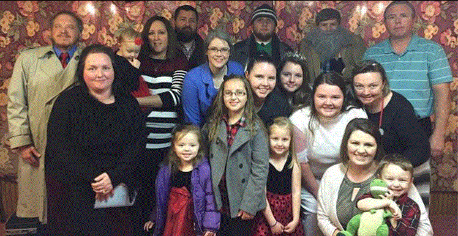

Welcome to our youth page!
Our youth are dedicated to worshiping the Lord with all our talents and gifts. The Lord has shown through them, and is continuing to do so on a regular basis. Many people have been blessed by seeing them active for the Lord. They have an eagerness to participate in activities that promote the message of God.
A common saying that has been floating around our church district is "The youth are not just the church of tomorrow; they're also the church of today." If you have youth that would like to become involved, or if you're looking to support a youth group in any way, we welcome you and youth to join us as well as any support you have to offer.